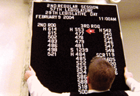

|
STATE LEGISLATURE
Frederick Wiseman | USA 2007 | 217 min.
Format: 16mm
Material: 16mm
Original language: English
Script: Frederick Wiseman
Camera: John Davey
Editing: Frederick Wiseman
Sound: Frederick Wiseman
Production: Idaho Film Inc.
Distribution: Freunde der Deutschen Kinemathek, Berlin
Idaho is the northwest of the USA. In each of the 35 electoral districts of the Rocky Mountain state, two representatives and one senator are elected. Over a legislative period of two years, these officials have law-making and budgeting in their hands, in short, the fate of Idaho. Frederick Wiseman observed them, in committee meetings, in hearings, in informal conversations in the hallways, in meetings with voters and lobbyists of every kind.
Is it possible to film the idea of democracy? What becomes clear through Wiseman’s method of observation and montage, without interviews and commentary, is the ardous interpersonal process of democratic decision-making itself. Quite incidentally he shows a distillation of white, Christian America, which for many has lost its attractiveness as a healing exporter of values. (Anna Hoffmann)
Frederick Wiseman was born in Boston on January 1, 1930. After completing a law degree at Yale University, he served in the U.S. Army from 1955 to 1956. He then worked as a lawyer in Paris for a year, before teaching at Boston University School of Law. Since 1967, he has made many documentary films as well as two feature films.
Films (selection): Titicut Follies 1967 | High School 1968 | Law and Order 1969 | Juvenile Court 1973 | Meat 1976 | Sinai Field Mission 1978 | Model 1980 | Missile 1987 | Near Death 1986 | Central Park 1989 | Zoo 1993 | Public Housing 1997 | Domestic Violence 2001 | The Garden 2004 | State Legislature 2007
back
|